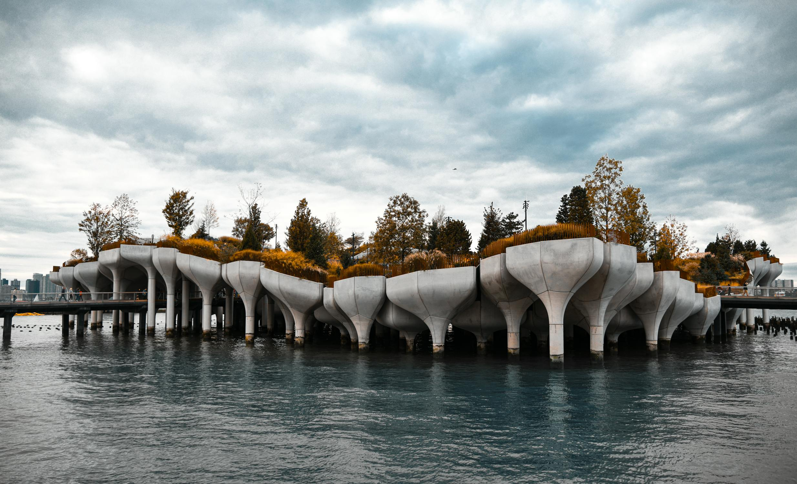
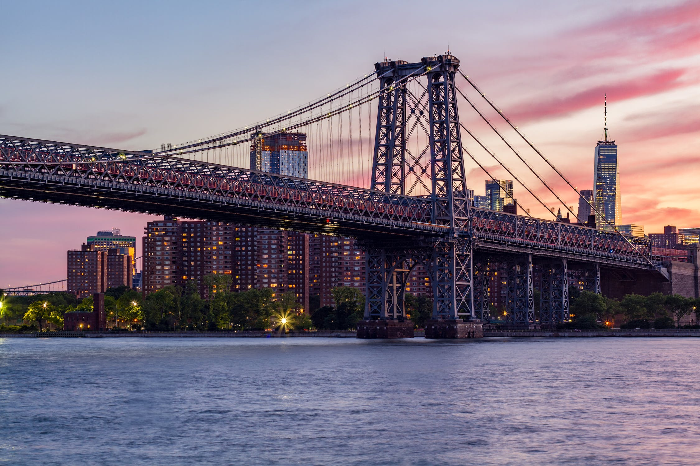
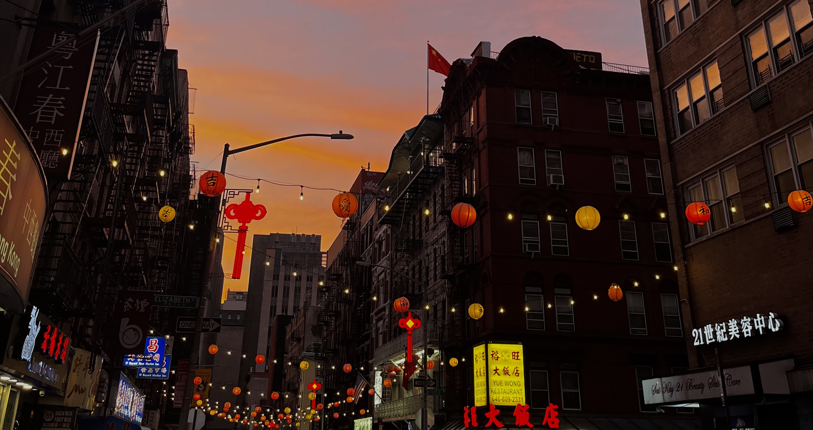

Taking a stroll down St. Mark's Place in the East Village is like stepping into a time when punk rock ruled. The quirky shops, such as Trash and Vaudeville, aren't just stores; they're like time capsules filled with stories of rebels and rule-breakers. The graffiti-covered walls tell tales of a time when being different was celebrated
Greenwich Village
Greenwich Village
Greenwich Village, with its cozy cafes is like a warm embrace of creative minds. It's not just about the old buildings; it's about feeling connected to the artists and thinkers who shared ideas in these places. Washington Square Park isn't just a park; it's a special space where I sense the echoes of those who shaped this neighborhood's artistic soul.
Soho
Soho
Soho's charm isn't just in its fancy streets but in places like the Puck Building, where I feel a personal connection to the art scene. The galleries, like the Leslie-Lohman Museum, aren't just places to visit; they're like friends in my artistic journey. Soho is more than a neighborhood; it's a canvas where my creativity blends with the spirit of the place, making each visit a unique experience.
Midtown
Midtown
Midtown isn't just skyscrapers and Times Square's bright lights; it's my personal arena of dreams. The towering buildings aren't just landmarks; they represent my ambitions and the hustle that defines this city. Walking down Fifth Avenue isn't just a stroll; it's a journey toward my own version of success, where every step feels like progress.

Chelsea
Chelsea
Chelsea, with its art galleries and the lively Chelsea Market, is like a creative playground where I find inspiration. The High Line isn't just a park; it's a peaceful escape where I reflect on my own artistic journey. Chelsea isn't just a neighborhood; it's a part of my story where creativity
meets everyday life, turning every visit into a personal exploration.

Williamsburg
Williamsburg
Williamsburg's charm goes beyond trendy shops and cafes; it's a place where individuality is celebrated. The Smorgasburg isn't just a festival; it's a spot where laughter becomes a shared experience. Williamsburg isn't just a neighborhood; it's my haven where diversity and uniqueness are embraced, making it feel like home.
DUMBO
DUMBO
SUnderneath the Brooklyn Bridge, DUMBO's transformed warehouses and art spaces feel like symbols of personal growth and change. Strolling along the cobblestone streets, places like St. Ann's Warehouse aren't just venues; they're spaces where I witness the transformative power of art. DUMBO isn't just a neighborhood; it's a part of my journey, where every sunset by the East River becomes a reminder of positive transformation and the beauty of embracing change.

Chinatown
Chinatown
In the lively streets of Chinatown, where the scent of dimsum fills the air, it's more than just a neighborhood; it's a connection to my cultural roots. Chinatown, with its diverse eateries and cultural landmarks, isn't just a place to visit; it's a vibrant mosaic that weaves together stories of resilience, celebration, and a rich tapestry of cultural identity.